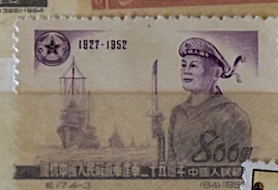
| SOURCE | TITLE| IMAGE MATCH | click to source page |
| Redbubble | Anniversary of Founding of Chinese Navy" Greeting Card for Sale by AscotSteve | Redbubble | 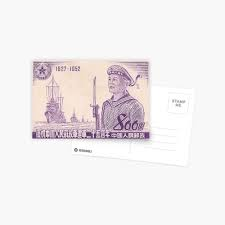 |
| eBay | Burma Banknote 1 Kyat 1972 P 56 UNC w/UN FDI FLAG STAMP Consecutive DU3595282,3 | eBay | 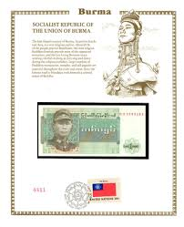 |
| eBay | TT 1984 FRANCE OLD MAN AT THE TEMPLE ECHANTILLON 1250 TEST NOTE PMG 66 EPQ GEM | eBay | 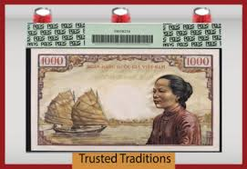 |
| church-publishing.com | 1966 200 Vietnam Dong – Church△Books | 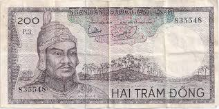 |
| eBay | VIET NAM 50 dong ND (1950) Ho Chi Minh Rare!!! | eBay | 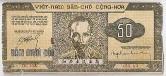 |
| eBay | VIETNAM 1 DONG KM-3 1946 V N D C C H RARE VIETNAMESE COIN MONEY ASIA ASEAN | eBay | 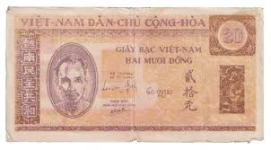 |
| Palm Island Coins and Currency | 1947-9 French Indo-China 1 Piastre “Farmer" World Currency, Extra Fine | Palm Island | 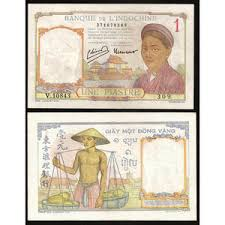 |
| eBay | Vietnam P-16 1 Dong 1948 Serial # at Bottom Left LCG 50 | eBay | 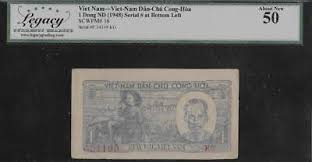 |
| eBay | FRENCH INDOCHINA INDOCHINE 1 PIASTRE ND (1936) Pick-54b PCGS 64 AUNC PPQ | eBay | 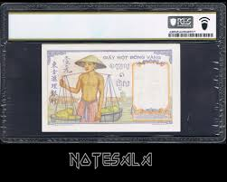 |
| eBay | Vietnam south 200 dong 1966 - Copy | eBay | 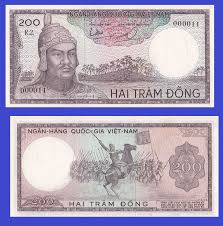 |
| eBay | VIETNAM 10 DONG 1948 Pick# 22 | eBay | 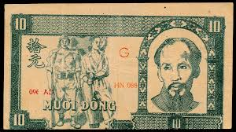 |
| eBay | French Indo-China 1 Piastre 1932 (1936), UNC, P-54b, Colonial Banknote Money | eBay | 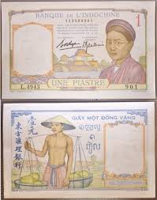 |
| eBay | Myanmar 500 Kyats ND 2020 Pick 85 UNC Uncirculated Banknote | eBay | 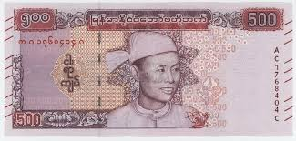 |
| eBay | French Indochina 1 Piastre Banknote 1936 Hand Stamped Rare | eBay | 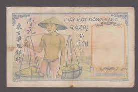 |
| eBay | Myanmar 1000 kyats ND [2019] P-86 UNC | eBay | 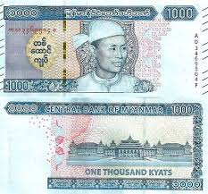 |
| eBay | Vietnam P-32 50 Dong 1950, No Wmk | eBay | 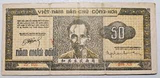 |
| eBay | Burma Banknote 1 Kyat 1972 P 56 UNC w/UN FDI FLAG STAMP Consecutive DU3595575,6 | eBay | 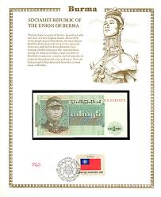 |
| eBay | French Indochina - Old 1 Piastre Note (1949) P54e - Uncirculated | eBay | 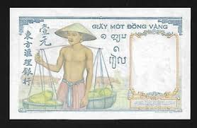 |
| eBay | Viet nam 50 Dong 1950 P-32 ( Prefix ZM ) | eBay | 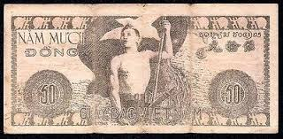 |
| eBay | Myanmar Burma 500 Kyat, General Aung San / Central Bank, 2020, UNC | eBay | 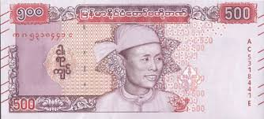 |
| eBay | French Indo-China 1 Piastre 1932 1939, AU, 5 Pcs LOT, P-54e, Without Dot | eBay | 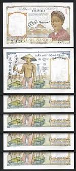 |
| eBay | Vietnam vietnam south 1000 dong 1955 - Copy | eBay | 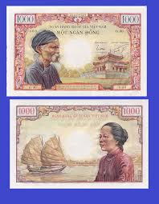 |
| eBay | South Vietnam 200 dong ND (1966) Nguyen-Hue, a. Watermark: Demon's head. | eBay | 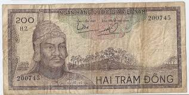 |
| eBay | 🔴VIETNAM 20000 Donga 1991 UNC P-110 🔴 | eBay | 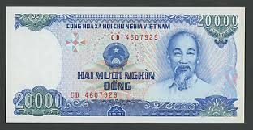 |
| eBay | Vietnam P-26 20 Dong 1948, Wmk Geometric Pattern | eBay | 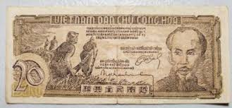 |
| eBay | VIET NAM SOUTH, 100 DONG,P#19b, ND(1966) | eBay | 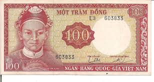 |
| eBay | French Indochina 1 Piastre ND 1932-1949 P 54 e AUnc Yellow Tone | eBay | 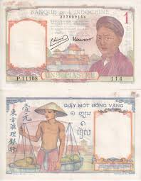 |
| eBay | Viet Nam 3 notes Set 200 , 500 and 1000 Dong 1964 Uncirculated Banknotes TX11 | eBay | 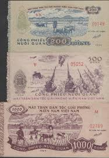 |
| CGB Numismatics | 200 Dong SOUTH VIETNAM 1966 P.20a 555141 Banknotes | 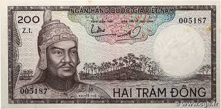 |
| eBay | Vietnam P-22d 10 Dong 1948 Circle w/ Star Watermark LCG 30 | eBay | 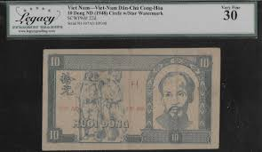 |
| eBay | French Indochina 1 Piastre 1932 Pick# 54a PCGS: 55 About UNC. #PL2049 | eBay | 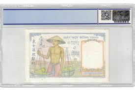 |
| eBay | Viet Nam 5 Dong 1958 P73a About Uncirculated | eBay | 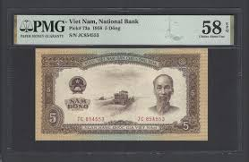 |
| eBay | French Indo China 1 PIASTRE P-54D 1946 BUFFALO AUNC World Currency VIETNAM NOTE | eBay | 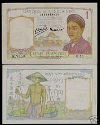 |
| eBay | Lao, 2.000 ( 2000 ) Kip, 2003, UNC, p33b , Serial Number: QC2128618 | eBay | 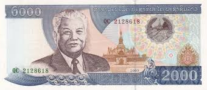 |
| eBay | Vietnam P-23 10 Dong 1948, Trung Bo, No Wmk | eBay | 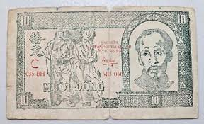 |
| eBay | VIETNAM 20 DONG 1946 Pick# 6 | eBay | 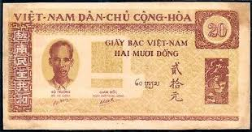 |
| eBay | French Indochina 1 Piastre Banknote P-54b ND (1936) Lao Text Type I PMG 55 | eBay | 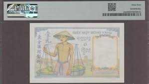 |
| Etsy | Burma 75 Kyats Banknote: Aung San & Lokanat, Myanmar Money for Collage - Etsy | 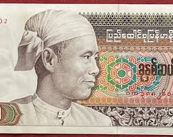 |
| eBay | Viet Nam 3 notes Set 200 , 500 and 1000 Dong 1964 Uncirculated Banknotes TX11 | eBay | 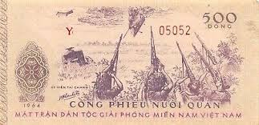 |
| eBay | Vietnam P-22d 10 Dong 1948, Clear Printing, Wmk Circle Star | eBay | 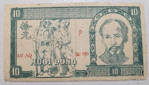 |
| eBay | VIETNAM SOUTH - SPECIMEN 100 DONG 1966 PICK# 19s2 Choice UNC. (#254) | eBay | 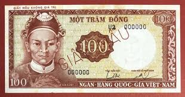 |
| eBay | French Indochina: 1 Piastre ND (1932) Pick 52 PMG Choice Uncirculated 64. | eBay | 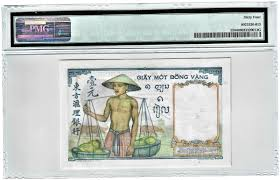 |
| eBay | South Vietnam P-19b 100 Dong 1966 PMG 66 EPQ | eBay | 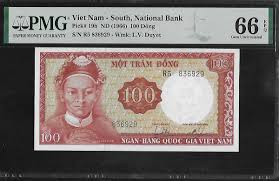 |
| eBay | Vietnam P-33 100 Dong 1950 | eBay | 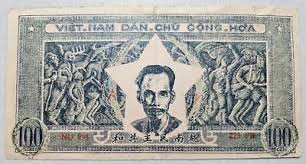 |
| eBay | FRENCH INDOCHINA VIETNAM 100 PIASTRES 1954 P 108 XF++/AU free shipping from 100$ | eBay | 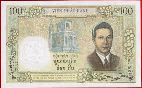 |
| eBay | Vietnam 1 dong ND (1948) Ho Chi Minh High grade!!! | eBay | 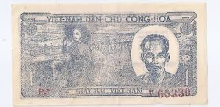 |
| eBay | Sweden, Vietnam, Erak, Burma, Set of 4 Notes , All Different World Banknotes | eBay | 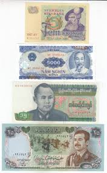 |
| eBay | Myanmar 500 Kyats ND(2020) P85a Uncirculated Grade 65 | eBay | 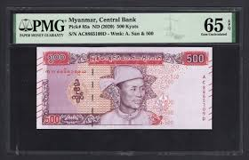 |
| eBay | VIETNAM SOUTH 10 XU 1963 UNC PREFIX AA,NO DATE RED,STAR AT CENTER,CENTRAL COMMIT | eBay | 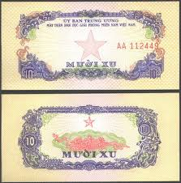 |
| eBay | Laos: 100 Kip, 1979 | eBay | |
| eBay | SOUTH VIETNAM 1966 100 DONG BANKNOTE (SCARCE AND RARE), P#19, PREFIX S1~744552 | eBay | |
| eBay | Vietnam P-32 50 Dong 1950, No Wmk | eBay | |
| eBay | French indochina banknote | eBay | |
| eBay | 1946 French Indo-China Consecutive Triple Banknotes 1 PIASTRE Pick 1 | eBay | |
| eBay | Vietnam P-35 100 Dong 1951 | eBay | |
| eBay | VIET NAM , 5 DONG,P#3, HCM @ l, ND(1946) | eBay | |
| eBay | Indochina / French Indochina 1 Piastre Banknote 1949 Old Circulated Bill P-54e | eBay | |
| eBay | FRENCH INDO CHINA 1 Piastre 1936, P-54b Sign: 9 Lao Text #1, PMG 66 EPQ Gem UNC | eBay | |
| MA-Shops | Vietnam 30 Dong 1981 P. 87 a UNC | MA-Shops | |
| eBay | China Shanghai Municipal Council - 6% 1941 . Scarcer $1,000 Loan | eBay |